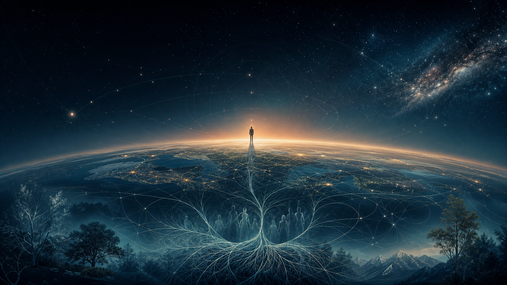

Космічна психологія
Космічна Віра DREVO — це світоглядна та філософія. Вона визначає ставлення людини до життя, природи, людства та Всесвіту, а також формує універсальні цінності, що поєднують людей незалежно від їхнього походження, культури та релігійних переконань.
Гортайте ↓Світогляд
Космічна Віра розглядає людину як частину єдиного живого Всесвіту. Людина немає окремо від природи, нашого суспільства та космосу: він включений у загальну систему взаємозв'язків і відповідає за наслідки своїх дій.
Такий світогляд допомагає людині усвідомити:
своє місце у світі;
зв'язок із природою та іншими людьми;
відповідальність перед майбутніми поколіннями;
необхідність внутрішнього та суспільного розвитку;
цінність життя у всіх її проявах.
Філософія
Філософія Космічної Віри заснована на пошуку сенсу, істини, гармонії та розуміння законів світобудови.
Вона з'єднує:
духовний досвід;
філософське осмислення життя;
спостереження за природою;
культурну мудрість народів;
наукове пізнання;
прагнення постійного розвитку.
Космічна Віра не пропонує людині готових відповідей на всі запитання. Вона закликає його досліджувати світ, розмірковувати, розвивати свідомість та перевіряти свої переконання через особистий досвід, знання та творчу діяльність.
Ставлення до Всесвіту
Всесвіт сприймається як велике ціле, частиною якого є Земля, природа, людство та кожна окрема людина.
Ставлення до Всесвіту виражається через:
повага до її законів та циклів;
вивчення космосу та природи;
усвідомлення обмеженості людських знань;
відкритість новим відкриттям;
відчуття подяки за життя;
прагнення жити в гармонії з навколишнім світом.
Людина розглядається як мікрокосм - Жива система, в якій відображаються природні, соціальні та духовні процеси великого світу.
Універсальні цінності
Космічна Віра DREVO спирається на цінності, які можуть бути зрозумілі та близькі людям різних культур:
Життя - Повага та захист життя у всіх його проявах.
Кохання - Здатність піклуватися, підтримувати і творити.
Совість - Внутрішнє почуття відповідальності за власні рішення та вчинки.
Правда - Прагнення до чесного пізнання себе і світу.
Свобода право людини обирати свій шлях без порушення свободи інших.
Відповідальність - розуміння наслідків своїх дій для сім'ї, суспільства, природи та майбутніх поколінь.
Справедливість - Повага до гідності людини і прагнення до чесних відносин.
Знання - Постійне навчання, дослідження та передача накопиченого досвіду.
Створення - Праця та творчість, спрямовані на розвиток життя.
Гармонія — досягнення рівноваги між тілом, душею, розумом, суспільством, природою та технологіями.
Єдність у різноманітті — повага до різних народів, культур, традицій та шляхів духовного розвитку.
Коротка формула
Космічна Віра DREVO — це світогляд єдності, філософія пізнання, поважне ставлення до Всесвіту та система універсальних цінностей, що спрямовує людину до усвідомленого, відповідального та творчого життя.